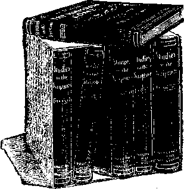

GOLDEN AGE AT THE DOOR
WATCH TOWER BIBLE & TRACT SOCIETY
310 Martin Bldg., Federal St. PITTSBURGH
PA.
“And he that sat upon the throne said: Behold, I make all things new.”—Revelation 21
THE promise of a new day has long been before God's people—in the Bible. It was hinted to our first parents, six thousand years ago, that eventually the seed of the woman should bruise the serpent's head. This, interpreted, is understood to mean that the power of Satan will be crushed, and mankind will be delivered from the reign of sin and death which has prevailed since the disobedience in Eden.
A second promise, still more explicit, made by God to Abraham of old, says, “In thy seed shall all the families of the earth be blessed.” For centuries Abraham’s posterity waited for the Messiah of promise, with the anticipation that he would use them in connection with his work of blessing all peoples. The prophets of Israel foretold the coming King of the line of David—that he should be a great Priest, a reigning Priest, after the order of Melchizedek. To him “every knee shall bow and every tongue confess,” and through him a blessing will extend to all nations as “a feast of fat things full of marrow, and wines on the lees.”—Isaiah 45 -.23 ; 25 :6.
Even the disciples of Jesus, who recognized him as the “Sent of God,” were disappointed that his glorious kingdom, of which he spoke, was not immediately revealed, and that in answer to their question he declared, “It is not for you to know the times and the seasons which the Father hath put in his own power.” Still the prophecies respecting Messiah’s kingdom were repeated and amplified in the parables of Jesus, in the teachings of his apostles, and finally and graphically, in the
last book of the Bible, in the Revelation which Jesus gave the church through St. John.
Our text is a quotation from this Revelation, respecting the kingdom of Messiah. Through it God -is to wipe away all tears from off all faces ; and the King of kings and Lord of lords, whom Jehovah has established as the great Messiah, assures us that he will “make all things new.”
Even the heathen poets sang of the Golden Age to come—quite probably borrowing their thought from the Hebrew Scriptures and quite probably realizing in some measure that a gracious God would not forever permit a reign of sin and death, but would somehow, sometime, and through some agent, bring to earth blessings to supplant the curse.
“Arise, Look Around Thee”
After all these centuries of waiting and hoping and praying, “Thy kingdom come; thy will be done on earth, as in heaven,” God’s people today are more and more awakening to a realization of the fact that we are living in the very dawn of the glorious epoch for which all have waited, prayed and hoped. These blessings have come down like a gentle shower, so quietly that we can scarcely realize that the earth has entered upon the foretold times of refreshing and restitution mentioned by St. Peter.—Acts 3:19-21.
Many are still asleep. Some are confused, and know not to what the blessings should be attributed. Having lost faith in the Bible and its promises, many are seeking a solution of the wonderful things of our day along the lines of evolution, claiming that a nature god operates by blind force, under a law of the survival of the fittest. Surely they overlook the fact that there were great characters in the past with whom few of the present day may be compared—such as Shakespeare, Bacon, Socrates, Plato, St. Paul, King Solomon, King David the poet, Job, Moses, etc.
A far better explanation is furnished us in the Bible. It explains that the wonders of to-day are
the foregleams of Messiah’s kingdom, and its blessings the foregleams of the Golden age. It explains that we are in the day of Jehovah’s preparation for the kingdom of his Son. We have the numerous Scriptural declarations pointing to the end of this age and the dawning of a new age, and assuring us that at this time many would run to and fro, knowledge should be increased, and the wise should understand. — Daniel 12:1-10.
“In the Time of the End”
This prophecy of Daniel is worthy of careful note, not only because Daniel was a prophet greatly beloved by the Lord, but because Jesus, the Redeemer, specially quoted a portion of this prophecy, and thus attested its genuineness. The many running to and fro could seemingly refer to nothing else than the wonderful traveling which is a feature of our day and no other.
In no other time was running to and fro a possibility to any extent. It is less than a century since the first crude locomotive was built. It is only one hundred and six years since the first steamboat by Fulton was tried: It might be said that there was no opportunity for running to and fro until within the past fifty years. Now, the world is girded with rails. Now, the ocean voyage of four months is cut down practically to as many days by mammoth vessels carrying three thousand to four thousand at a time.
Who knew, at the time of Daniel’s prophecy, of these wonderful facilities for running to and fro? Who knew that these facilities would be so generally used in this our day? Only the Almighty! And he gave this as one of the particular signs of the ending of the present age—the dawning of the new dispensation—the long-promised Messianic kingdom.
Look also at the second proof furnished us by this Prophet—the increase of knowledge. Who would ever have dreamed, a century ago, of conditions as they are at this moment—when practically every human being in civilized lands, from
GOLDEN AGE AT THE DOOR 5 ten years old and upward, is able to read and write? Who would have dreamed of such persistency to fulfil the prophecy as would lead to laws of compulsory education in all civilized lands? Verily, the increase of knowledge is a positive proof of the inspiration of Daniel’s prophecy, and equally proves that the new age is dawning, and that we are now in the day of God’s preparation for it.
The next statement of the Prophet Daniel is that the wise of God’s people shall understand. And now, in the appropriate time, all over the world, classes of Bible students are coming together, regardless of denominational lines, to study the heavenly Father’s Word. And true to the prophecy, the wise, trimming their Bible lamps and being well supplied with the oil of the holy Spirit, are receiving light—are understanding the things kept secret from past ages and generations.
“The mystery of God shall be finished” is another of the promises of the Bible respecting the present time; and surely it is having fulfillment! Not all are yet awake. But the joy of those who are awake, and their singing of the song of Moses and the Lamb, tend more and more to awaken all the virgin class.
One more token of the end of this age and the dawning of the new age; God declared to the Prophet Daniel that “There shall be a time of trouble such as never was since there was a nation.” Let us not especially dwell on this sad feature. Let us regret that unpreparedness for God’s mercies and blessings make necessary a great day of trouble, to prepare the hearts of men for the blessings God is about to pour upon them.
The Redeemer mentioned the present time, and the time of trouble which we see looming up on every hand and threatening the very foundations of society—political, social and religious. He bade his followers rejoice even amidst the trouble, because it marks the day of deliverance from the power of sin and death. He said, “When these things begin to come to pass, then look up, and lift up your heads and rejoice, knowing that your deliverance draweth nigh.”—Luke 21:28.
The Bible declared that a prominent feature connected with the new age will be the binding of Satan, the prince of darkness, the father of lies, who has been deceiving poor humanity for these six thousand years. Continually he has been misrepresenting God’s character and plan so as to turn humanity away from God in fear and distrust. Thus he has blinded their minds to God’s glorious goodness, which, to his people, is now shining clearly, in the personal character of our Redeemer and in the promises of the Bible.
Knowledge of God’s Glory
Every preparation is being made for the dissemination of knowledge world-wide. Telegraph wires and cables connect the civilized world, and now additionally the wireless telegraphy; and the later improvements upon this means of communication seem destined to bring it shortly to a plane of world-wide economy and usefulness. The printing-press is one of the most wonderful preparations of God for the general dissemination of knowledge. And already the world is learning that many of the things considered absolute certainties by our forefathers are really absurdities. Amongst others are the various creeds which we and other civilized peoples have worshiped as idols—idols which have seriously misrepresented the character of our heavenly Father.
In agriculture other wonders are being performed, fulfilling the Scriptures, and seeming, in the light of the past, almost as miracles. Vast areas of wilderness and arid lands are being fertilized. Artesian wells are fulfilling the prophecy of springs coming forth from the desert. The promise of the Lord through the prophet, that the earth should yield her increase, is also being fulfilled. New varieties of wheat, of oats, of cotton, etc., are being discovered, and the yield is being multiplied. At the same time the quality is being advanced. Fruits and vegetables are reaching a perfection not dreamed of even twenty-five years ago.
The same divine providence which has lifted the veil before the eyes of mechanics has also lifted the veil before the eyes of agriculturists, and Mr. Burbank has been giving the world wonderful lessons in agriculture and horticulture. These blessings of our day are none the less wonderful because they are coming in a seemingly natural way. If once we expected these things to be fulfilled in a miraculous manner, it was because we forgot that.
“God moves in a mysterious way His wonders to perform.”
Everything in nature is really a miracle until we come to understand it, and then it is no less a wonder, but merely seems less so because commonplace and usual.
“Send Out Thy Light”
While we have been singing, “Send opt thy light and truth, O Lord,” perhaps comparatively few who sang have appreciated the fact that, while we were asking, God was fulfilling our request, not only along spiritual lines, but also along natural lines. The increase of light, knowledge, understanding, appreciation of God’s Word, has merely been keeping pace with the natural light.
Think of it! even fifty years ago the making of tallow candles was an industry in nearly one-half the homes of humanity! Only then did petroleum begin to enlighten the world. Then came coal gas; and now this is rapidly giving way to the electric light, in which one form after another is increasing its usefulness and cheapness. Indeed, when we speak of electricity we are speaking of one of the wonders of the world, of which we understand so little. It would appear as though the Lord has hidden in this treasures of wisdom, power and blessing.
Already the hours of labor are greatly decreased. Already time for study, improvement and pleasure is at our disposal. And yet we are only in the infancy of these blessings. We are only nearing the dawn of that glorious day when sin and sorrow shall pass away forever.
At one time we might have feared that the rapid increase in the consumption of coal would soon leave the world destitute of fuel. Statisticians declare that the supply of the whole earth at the present rate of consumption and increase will be exhausted in less than two centuries. But we need not fear. A better means of comfort, than by the drudgery of our fellow-creatures in the bowels of the earth, will undoubtedly be provided by the great King of kings, who has undertaken by his kingdom to bring to our race blessings, instead of the curse under which we have labored six thousand years—six great days.
How he will do it is, of course, a mystery. Nevertheless, we do know that in the water which is so abundant and in the air which we breathe there are elements of combustion far more than sufficient for every need. Man needs the key of knowledge on this subject, and it will doubtless be furnished by the Lord in the very same way that he has already given us the key to our other blessings which are preparing for the perfectness of his Millennial kingdom.
Forgiveness, Reconciliation, Peace
But Messiah’s kingdom will be much more than a beneficent reign giving mankind temporal blessings and knowledge. In connection with the knowledge of God, the way of reconciliation will be paved for the sinner. He who redeemed the world with the sacrifice of his own life is to be the great Mediator between God and men. Forgiveness of sins and help out of the weaknesses of the fall are the glorious promises of the Scriptures.
It was never more the divine purpose that man should contend with sickness, sorrow, pain, weakness, and death itself than that the angels should be thus afflicted. The same God that created the angels, and gave them happiness and perfection, created man and properly endowed
GOLDEN AGE AT THE DOOR 9 him at the beginning. The present difference between the perfection of the angels and the de-creptitude of humanity—mental, moral and physical—is explained by the Bible alone. It tells that Adam was originally perfect and pleasing to God; and that his rejection by God and his subjection to death and all its concomitants are the results of his disobedience in Eden.—Romans 5:12.
The Turning-Point—Divine Mercy ■
There was no turning-point so far as the divine purpose was concerned. The Bible assures us that God purposed human redemption from sin and death from the very beginning. But the first manifestation of that purpose was the turning-point so far as human observation discerned. That turning-point was the birth of Jesus, who was born into the world, not sinful and imperfect like Adam’s race, but especially born “holy, harmless, undefiled and separate from sinners,” that he might become the Redeemer of men and thus make possible their recovery from imperfect dying conditions. His birth of the Virgin stands related, therefore, to the great divine plan respecting his death, which really began at Jordan, when he consecrated himself to death and was baptized by John, and which was completed when on Calvary he cried, “It is finished!”
The next step in the divine program was Jesus’ resurrection. Put to death in flesh, he was quickened in spirit, still more glorious than before he was made flesh. (Philippians 2:9-11) The next step in the program was the anointing of the most holy of his followers to be fellow-members of the same glorious company under his headship. This took place at Pentecost, and the work there begun has continued for more than eighteen centuries. As our Lord there anointed the most holy of the Jews and continued to anoint all who would be members of the body of Christ, so in due time he began to anoint the most holy amongst the Gentiles—those who would become members of the same body, which is his church.
The divine purpose is that the risen Christ,
the second Adam, shall have a bride class, the second Eve—a divinely foreordained number. These eighteen centuries have been used of the Lord for the selection, or election, of this church to be his joint-heirs in his kingdom; and as soon as this elect number shall have been demonstrated, their loyalty proved, etc., this age will end and the new age be fully inaugurated. Many Bible students agree with us that we are very near the time when the church will be completed, and by the glorious change of the first resurrection be made like the Lord—spirit beings, “partakers of the divine nature.” (i John 3:2; 2 Peter 1:4) This will usher in the next step of the divine program—the Messianic kingdom, with Christ and his church-bride associated with him in the power and great glory necessary for the ruling, judging and uplifting of all the families of the earth. .
If the divine program has consumed so much time in getting ready for the blessing of the world, what a great blessing must be designed! This is fully attested by both the Old and the New Testaments. They speak of the new dispensation now dawning as times of restitution, times of refreshing. (Acts 3:19) They tell us that the earth will yield her increase; and this we see already beginning. They tell us that the knowledge of the glory of God will fill the whole world, breaking the shackles of ignorance and superstition. This we see abundantly witnessed on every hand today.
Earth’s Coming Glory
The next step in the divine program, which is about to begin, will require, the Bible says, a thousand years, and will accomplish all that God has declared. The earth will be brought to perfection. Even now we see evidences of this in the wonderful fruits and flowers of our day, far superior to those of the past in general, since Eden’s bloom and beauty were lost.
The point we are emphasizing is that Millennial blessings are not coming to the world by a process of evolution, but as a result of God’s lifting the veil from our eyes and permitting us to see what to do and how to do it. The same operation of divine providence is manifested in all the great inventions of our day. These were not gradually evolved during the past six thousand years, but have practically sprung into existence before our eyes—very many of them during the past forty years, all of them, we may say, within the one hundred and sixteen years from 1799, a period known in the Bible as the day of God’s preparation. (Nahum 2:3) During this period God has been preparing the world for the Millennium.
Our great inventors acknowledge that their work is not so much the result of personal effort, but rather a kind of inspiration. Their eyes of understanding opened, and things kept secret since the foundation of the world stood plainly before them and were readily put into practical form. It is the same respecting the progress in Bible study and in the understanding of the divine plan of the ages. It came, not by plodding study, but rather as an illumination of the mind by the holy Spirit; for God’s due time had come when those of honest mind should know the truth.
It is difficult for us to imagine that, such wonderful conditions as have become common in our day—such wonderful knowledge of the Bible as is now possible to God’s elect, and such wonderful fruits, flowers, etc.—should be only the beginning of God’s blessings. Yet it must be so; it must be that we are merely on the verge of still greater things—physical and mental blessings for all mankind.
Doctrines of Demons Interfere
We now see clearly that the horrible doctrines of the dark ages so beclouded our mental vision and so stagnated thought as to handicap the world in respect to every matter of progress and intelligence. Our creeds of the dark ages deceived us into thinking of the Almighty as a cunning, powerful Being who had planned our injury be-
12 GOLDEN AGE AT THE DOOR fore the foundation of the world, who purposed to torture eternally more than ninety-nine per cent, of the billions he had created. Under these mental delusions, the Bible came back to God’s people after it had been explained by the creeds for twelve hundred years. When our fathers began to study the Bible afresh, their minds were so impregnated with what the Bible styles “doctrines of demons” that they were looking for devilish things and made them out of Scriptural statements which had no such significance.
Christians have long realized that God does not purpose to leave the world forever in a sin and death condition. But they have looked for divine victory in the wrong direction, because they have accepted the theories of the dark ages formulated when the Bible was not in the hands of the people. The theory was that God wished the church to establish the Millennium by converting the world from sin to righteousness. An endeavor has been made to follow that theory. Inquisitions and persecutions were invoked to force people into church membership. How successful it was is witnessed by conditions in Europe at the present time.
Death the Penalty of Sin
How sad was the mistake which occurred when the “doctrines of demons” were brought in! Now we see that the Bible tells a very different story. It tells that God’s time for saving the world from sin and death will be during the thousand years of Messiah's kingdom; and that then they shall have every good opportunity that divine wisdom, love and justice will arrange on their behalf.
The dead are not in heaven nor in the Catholic purgatory nor in the still worse Protestant eternal torture. They are asleep, as the Bible declares. But for Jesus and his work they would be dead in the same sense that a brute is dead. Because Jesus died for sins, therefore there is to be a resurrection from the dead; and therefore the dead are spoken of as being asleep, uncon-
GOLDEN AGE AT THE DOOR 13 scious, waiting for the morning of Messiah’s coming and for the glorious blessings of resurrection promised.
Inherited weaknesses, surrounding temptations and ignorance of God, undoubtedly have more to do with the reign of sin in the world than any real preference for sin on the part of the majority. When temptation to sin shall have been removed, when Satan shall be bound, when the true light shall shine, when God’s true character shall have been manifested, when his loving pity for the race shall have been demonstrated, we have every reason to suppose that then the majority of mankind will be glad to return to the Father’s house, to serve him with true contrition of heart and loyalty. We are fully content, however, with the Scriptural proposition that when the light of that glorious day shall bring blessings to every member of our race, the inexorable law will be that whoever loves sin shall perish in the second death, without hope of recovery.
The Iron Rule of Christ’s Kingdom
Many erroneously suppose that when Christ’s Millennial Kingdom is inaugurated every one will be pleased with its ruling. But not so. Its regulations will be far more exacting than those of any previous government, and the liberties of the people will be restricted to a degree that will be galling indeed to many now clamoring for an increase of liberty. Liberty to deceive, to misrepresent, to overreach and to defraud others, will be entirely cut off. Liberty to abuse themselves or others in food or in drink, or in any way to corrupt good manners, will be totally denied to all. Liberty or license to do wrong of any sort will not be granted to any. The only liberty that will be granted to any will be the true and glorious liberty of the sons of God— liberty to do good to themselves and others in any and every way; but nothing will be allowed to injure or destroy in all that holy kingdom.— Isa. 11:9; Rom. 8:21.
That rule will consequently be felt by many
to be a severe one, breaking up all their former habits and customs, as well as breaking up present institutions founded upon these false habits and false ideas of liberty. Because of its firmness and vigor, it is symbolically called an iron rule—'“He shall rule them with a rod of iron.” (Compare Rev. 2:26, 27; Psa. 2:8-12; 49:14.) Thus will be fulfilled the statement, “Judgment will I lay to the line and righteousness to the plummet. And the hail [righteous judgment] shall sweep away the refuge of lies, and the waters [truth] shall overflow the hiding place,” and every hidden thing shall be revealed.—Isa. 28:17; Matt. 10:26.
Many will feel rebellious against that perfect and equitable rule because accustomed in the past, under the rule of the present prince, to lord it over their fellow-mortals, and to live wholly at the expense of others without rendering compensating service. And many and severe will be the stripes which a present life of self-indulgence and gratification will naturally demand and receive under that reign, before such will learn the lessons of that kingdom—equity, justice,, righteousness. (Psa. 89:32; Luke 12:47, 48.) The lesson on this subject comes first to the living generation, and is near at hand.—James 5 :i-io.
But, blessed thought! when the Prince of Life has put in force the laws of righteousness and equity with an iron rule, the masses of mankind will learn that “Righteousness exalteth a nation, but sin is a reproach to any people.” They will learn that God’s plan and laws are best in the end for all concerned, and ultimately they will learn to love righteousness and hate iniquity. (Psa. 45:7; Heb. 1:9.) All who under that reign have not learned to love the right will be counted unworthy of lasting life and will be cut. off from among the people.—Acts 3:23 ; Rev. 20:9; Psa.
NOV
"STUDIES
The Exhausti
Complete in Six Handsomely Bound Volumes
8,000,000 COPIES IN CIRCULATION
IN TWENTY LANGUAGES
“Greater, doubtless, than the combined circulation the writings of all the Priests and Preachers in N< America.”-W.T. Ellis, Editor-a-Field, The Contir “Intensely interesting, thoroughly logical and prsv.. cal.”—Gen, W. P. Hall, U. S. Army.
Ordinary Books of the size and style of Pastor Russell’s works regularly retail in book stores at $2.50 each, which would make the set of six volumes cost the purchaser $15.00.
Until the Twelve Million Mark is Reached, the Publishers have arranged to ship to any address, the entire set of six volumes, in imported maroon cloth binding, gold embossed (together with one year’s subscription to The Watch Tower, a 16 page semi-monthly religious Journal).
ALL FOR $3.95 DELIVERED. ORDER TODAY.
International Bible Students Association
N. S. Pittsburgh, Pa.
to be a severe one, breaking up all
habits and customs, as well as breaking
present institutions founded upon the false KNOWLEDGE and false ideas of liberty. Beca
ness and vigor, it is symbolically
rule—’ WATCH riiWER
ThuT‘ BIBLE AND TRACT SOCIETY
will MARTIN BLDG., N. S. PITTSBURGH, PA.
No. 1 WHERE ARE THE DEAD?
2 WHAT IS THE SOUL?
No. 3 CALAMITIES-WHY PERMITTED
2 No. 5 CHRISTIAN SCIENCE
No. 6 ■*- No. 7 P No. 8 1 <0. 9
af x 10 Pen it the : 12 and 13 ceiv 14 the 15 rigi . 16
Th- , 17 inu . 18
" . 19 ha 20
IS THERE A GOD?
HOPE OF IMMORTALITY THE RICH MAN IN HELL
DO YOU BELIEVE IN THE RESURRECTION? THE LIBERTY OF THE GOSPEL THE DAWN OF A NEW ERA DEMONS INFEST EARTH’S ATMOSPHERE COMFORTING WORDS OF LIFE GOLDEN AGE AT THE DOOR WHY GOD PERMITS EVIL JOYFUL MESSAGE FOR THE SIN-SICK GATHERINtfTHE LORD’S JEWELS _ EARTH TO BE FILLED WITH GLORY OUR RESPONSIBILITY AS CHRISTIANS
No. 21 THIEVES IN PARADISE
..22 THE BRUISING OF SATAN
No. 23
No. 24
No. 25
PREDESTINATION AND ELECTION DO YOU KNOW?
IS THE SOUL IMMORTAL?
BOOKLETS
WHAT SAY THE SCRIPTURES CONCERNING HELL? '■ 88 pages—10 cents
WHAT SAY THE SCRIPTURES ABOUT SPIRITISM?
128 pages—10 cents
WHAT SAY THE SCRIPTURES ABOUT OUR LORD’S return? 80 pages—10 cents
TABERNACLE SHADOWS OF THE BETTER SACRIFICES 160 pages—10 cents
BATTLE IN THE ECCLESIASTICAL HEAVENS-WHY
THE CLERGY ATTACK PASTOR RUSSELL
64 pages—5 cents